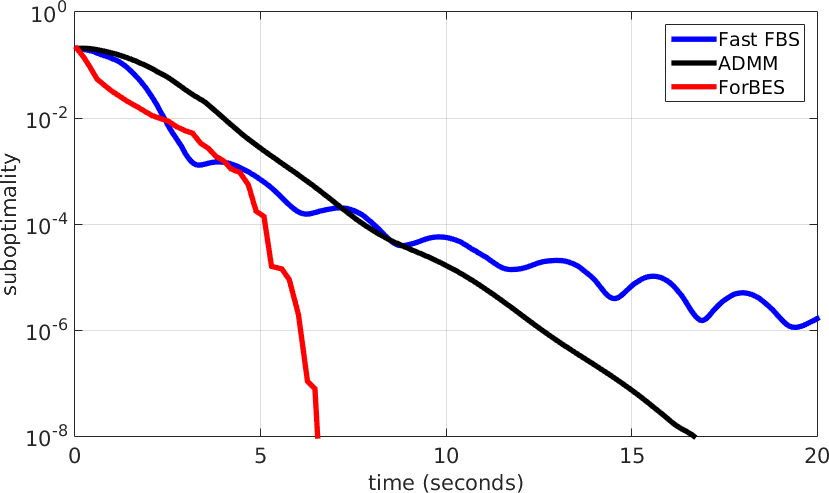

Welcome to ForBES¶
{kind=link}
ForBES (Forward-Backward Envelope Solver) is a MATLAB solver for nonsmooth optimization problems. It is generic in the sense that the user can customize the problem to solve in an easy and flexible way. It is efficient since it features very efficient algorithms, suited for large scale applications.
ForBES is open source and available on GitHub.
In the figure: performance of ForBES compared to other well known algorithms on a Lasso problem with 3K observations and 500K features, for a total of 7.5M nonzero coefficients.
References
[1] L. Stella, A. Themelis, P. Patrinos, “Forward-backward quasi-Newton methods for nonsmooth optimization problems,” arXiv:1604.08096 (2016).
[2] A. Themelis, L. Stella, P. Patrinos, “Forward-backward envelope for the sum of two nonconvex functions: Further properties and nonmonotone line-search algorithms,” arXiv:1606.06256 (2016).
Credits
ForBES is developed by Lorenzo Stella [lorenzo.stella-at-imtlucca.it] and Panos Patrinos [panos.patrinos-at-esat.kuleuven.be] at IMT Lucca and KU Leuven. Any feedback, bug report or suggestion for future improvements is more than welcome. We recommend using the issue tracker on GitHub to report bugs.